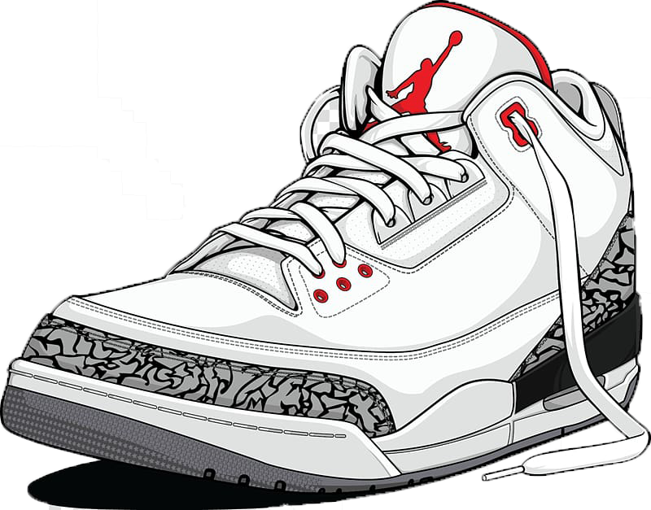
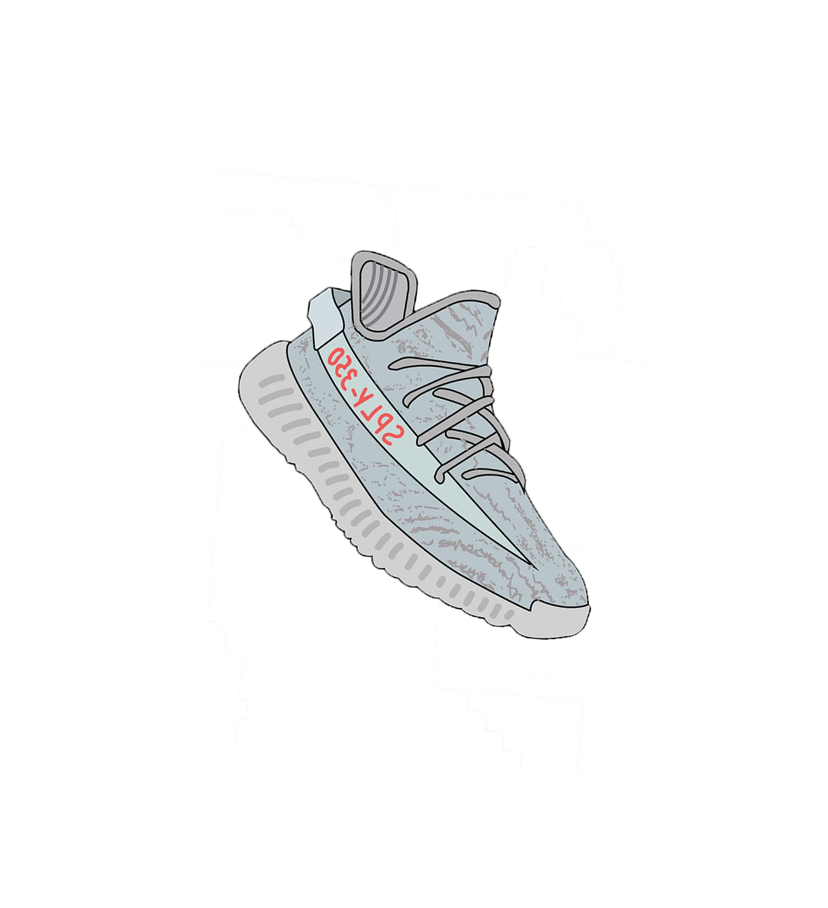
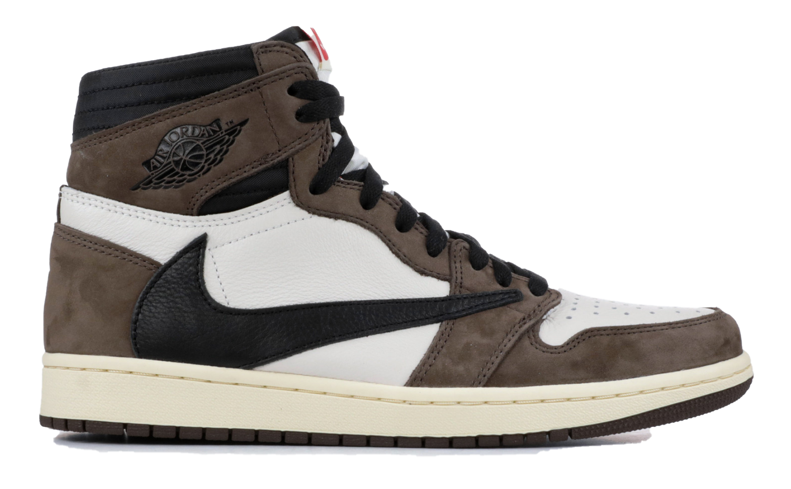
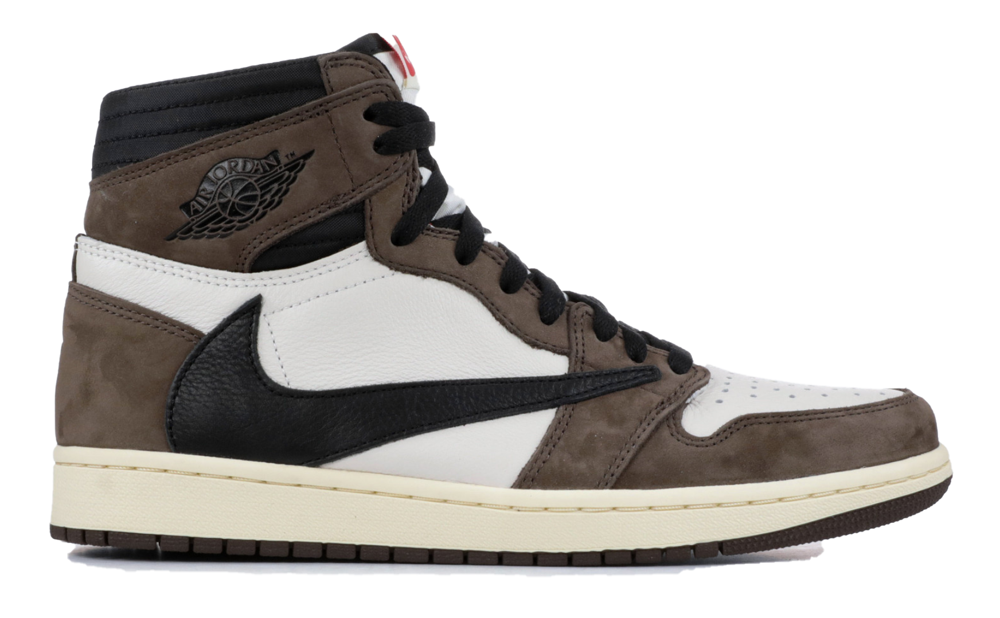

HIGH FASH(TON)
 Welcome to HIGH FASH(TON)! We are the one-stop shop for all your fashion needs. HIGH FASH(TON) is a "streetwear" fashion based website; it may be described as streetwear, but you sure as hell don't want to wear it out in the street! We select the finest, edgiest, eye-popping clothing from high-end fashion like Gucci, Louis, and Amiri to bougie boutiques like Zara and even cheap catches like Aliexpress. We specialize in holistic styling. While clothes can be viewed and purchased alone, we create sample outfits that include tops, bottoms, footwear, and jewelry.
 Accessories
Kicks of the Year
Accessories
Kicks of the Year